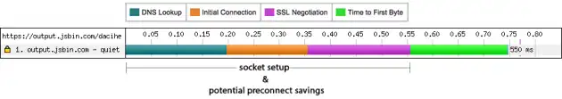

2. How to check if the image is FCP?
-
Use small image as the cover page (200 * 100): won't be marked as the LCP

-
Use large image as the cover page (2000 * 1000): will be marked as the LCP

3. How to use NgOptimizedImage?
-
Basic usage
- Check the parameters of NgOptimizedImage
4. Optimized strategies for LCP image
In the development mode, NgOptimizedImage can throw warning message for instructing developers by integrating the
PerformanceObserver API
There are a few things to do when we make sure the image belongs to LCP.
- Set priority to true
- Set loading to auto/eager
- Add the preload img tag
- Set the srcset (Descriptors higher than 2x are generally not recommended)
5. preconnect
-
The preconnect tage will provide a benefit to any future cross-origin HTTP request, navigation or subresource. It has no benefit on same-origin requests because the connection is already open. (reference)
-
The run-trip time (RTT) before the connection is established can be reduced. (reference)

6. preload
There are a few benefits for using the preload tag
(reference)
- The browser will increase the priority for the resource fetching.
- The browser fetches the resources for the current needed. The critical resource and navigation requests will be canceled for the current page’s unload.
- The browser will download the resource when the browser is available.
- The browser saves it in the HTTP cache if the resource is cacheable. The resource will be saved in the memory cache if it’s not cacheable.